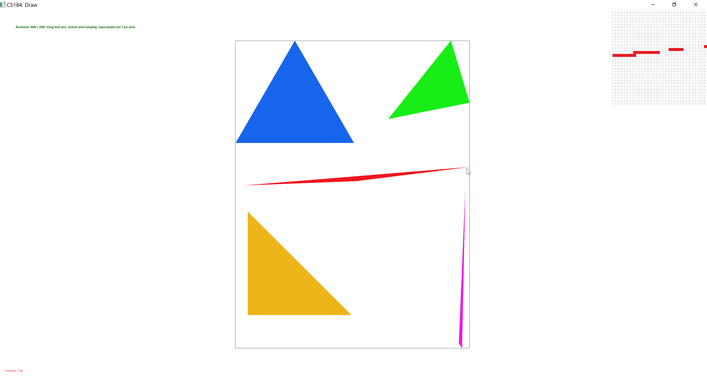
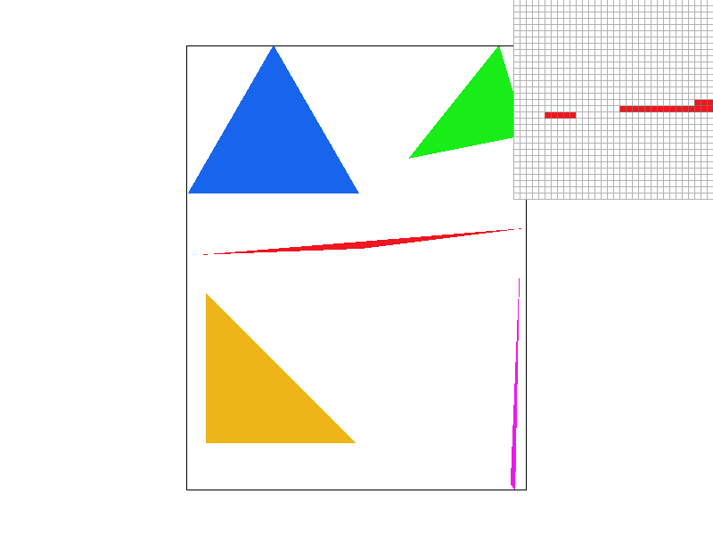
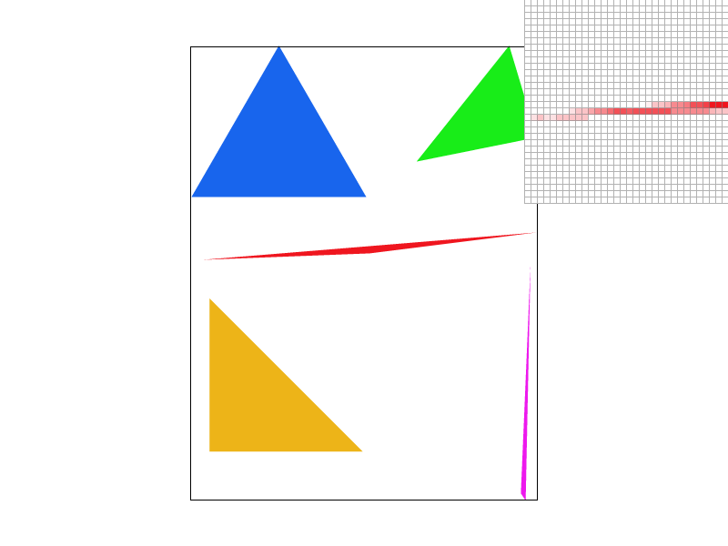
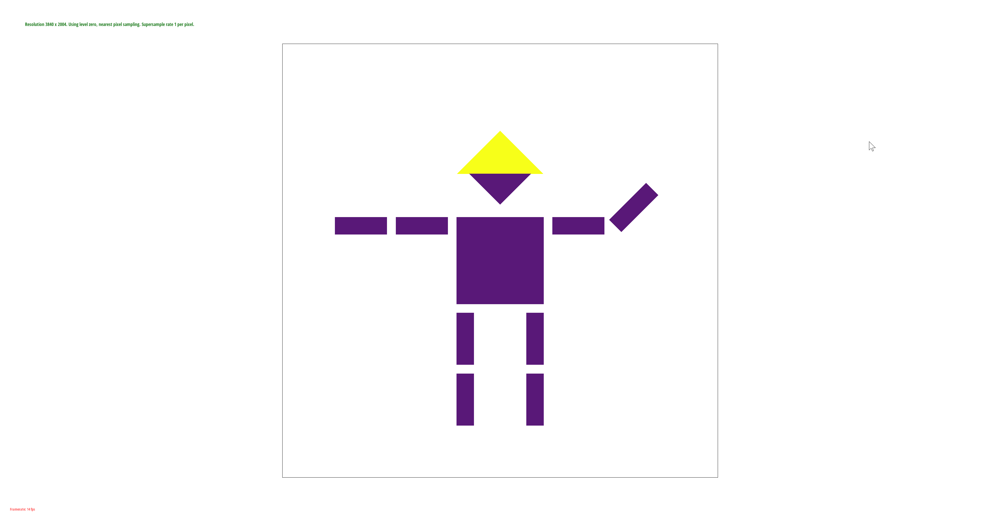
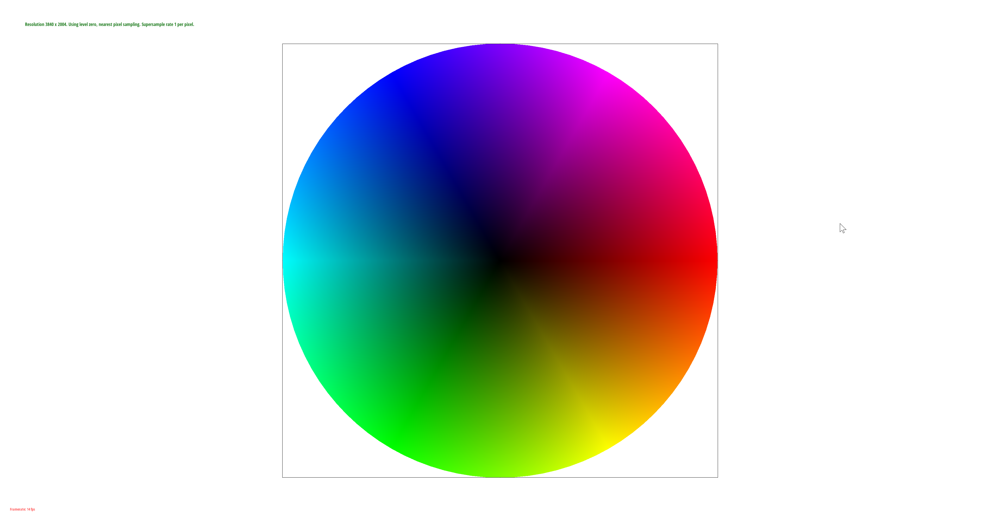
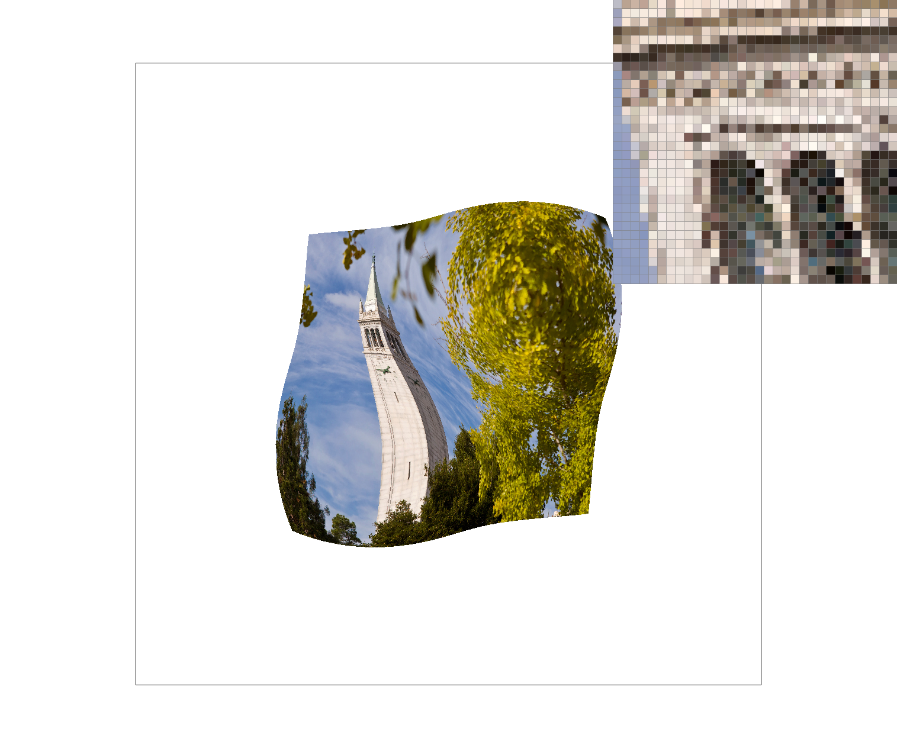
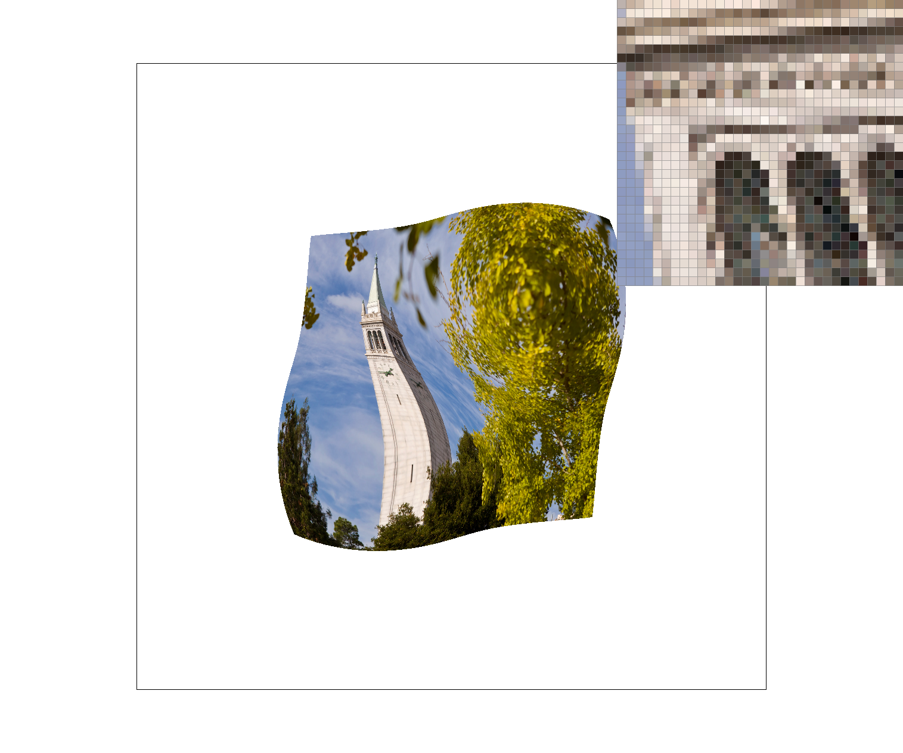
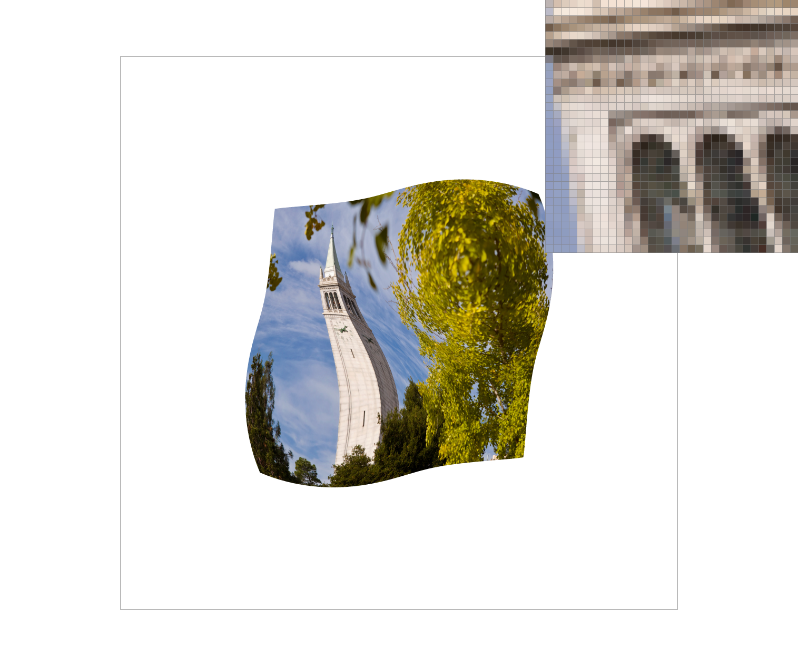
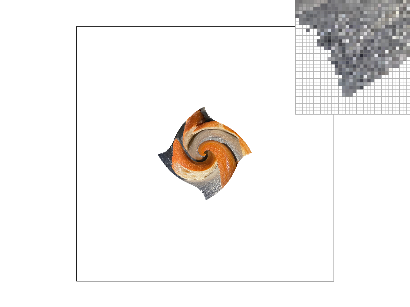

In this project, we implemented a variety of rasterization techniques, specifically for triangles. The most naive sampling method makes a binary decision for each pixel, which produces undesirable aliasing effects. We can fix this by supersampling, or sampling multiple times per pixel. This works surprisingly well. However, this can get expensive, including when sampling textures. So, we explored other methods, like bilinear texture sampling and mipmap level sampling, which are less expensive and help with aliasing, but they come with their own tradeoffs.
While these methods make sense on their own, implemementing them helped us understand exactly how we could use multiple of these methods at the same time. Additionally, some concepts take some care to implement correctly/cleanly/efficiently, despite being conceptually less difficult to understand. Some challenges included forgetting certain changes when repurposing code from previous parts and working with the details of using pixels' centers when sampling.
Other items in this project included a brief implementation of transforms using homogeneous matrices and the use of barycentric coordinates for interpolating on triangles.
For a triangle specified by three vertices, we first identify the bounding box by examining the min/max of x and y of the vertices. We then compute the three lines that form the edges of the triangle by using each pair of vertices (conceptually, so that we can check L_i(x, y) = A_i * x + B_i * y + C_i, or the signed distance to the line). One nuance here is that we don't know if the points are given to us in clockwise or counterclockwise order, so to check whether L_i should be positive or negative to indicate it's inside the triangle, we first check the sign of the remaining vertex against the line formed by the first two vertices. Our algorithm simply loops through every point in the bounding box (calculated using min/max of given triangle coordinates) and computes the signs of L_i(x, y) for each of the 3 lines, so it is no worse than one that checks each sample within the bounding box of the triangle.
Supersampling is useful because it helps prevent aliasing artifacts. Supersampling triangles is a natural extension of using one sample per pixel--instead, each pixel gets n*n samples. For n*n supersampling, we initially treat the final image as dimensions (width * n, height * n). To implement this, we use a sample buffer that is of size n * n * width * height to fit all the pixels of this "larger" image. For each of the (x, y) in the original rasterize_triangle function, we simply scale it up by n. The logic of rasterize_triangle fills this larger sample buffer. Then, we downsample this "larger" image by taking the average of the n*n pixels that correspond to a single pixel in the original image and placing it into the frame buffer. One bug we encountered was forgetting that the width of the "larger image" also scales up, affecting how we index into the sample buffer (which uses row-major ordering).
We modified other parts of the rasterization pipeline so that lines and points render the same with supersampling. In fill_pixel, we fill the n*n pixels in the "larger image"'s sample buffer that correspond to the original pixel instead of just one pixel. When they are averaged, they yield the original pixel. Additionally, we modified any calls to sample_buffer.resize to include the sample rate to appropriately size the buffer.
|

|
|

|
Supersampling results in some pixels being a lighter shade. Especially for sharp edges in triangles, only small portions of pixels will be within the bounding area defined by the triangle. With single pixel sampling, this small area is not shown at all because it does not overlap with the centers of any pixels. However, with supersampling, small areas of pixels are more likely to be in the triangle and identified. In these cases, some samples for a pixel will be in the triangle, and some will not. The average of the samples determines how much to shade the pixel, resulting in a different, lighter shade, instead of either red or white.
I changed cubeman to be purple. I wanted him to wear a yellow hat and wave.
Barycentric coordinates describe points in space as the weighted sum of the three vertices on an arbitrary triangle. The weights are not arbitrary, however. They give us a natural way to think about interpolating some value across a triangle. This is useful when we are given a value for each vertex of a triangle and want to smoothly fill in the values of the points within the triangle. These values can be anything, but a common type of value is color. For example, if we are given a triangle where we specify the three vertices as red, green, and blue, then to color each point in the triangle we can calculate weights on the colors based on how proportionally far they are from the respective vertices using barycentric coordinates. Then using these barycentric coordinates we could fill in the triangle smoothly by assigning to each point the weighted sum of colors.
Pixel sampling is when we determine the value to assign to a pixel. In other words, for each pixel (x, y) on the screen, we wish to determine its value. We want the overall image should look good. In the context of texture mapping, we have blank screen pixels at a point (x, y) that are mapped to a particular texture at point (u, v). However, the texture itself is also comprised of pixels, and our mapping function does not necessitate (u, v) be integers, so (u, v) would likely land "in between" texture pixels (texels). Different pixel sampling methods would derive the value to assign to (x, y) in different ways. Nearest will look at the texel closest to (u, v) (in other words, round u and v to nearest integer), then simply assign the texture value at the nearest point to (x, y). Bilinear will look at the four texels closest to (u, v), then linearly interpolate their values. Intuitively, we take a weighted sum of the values at these four texels, where the weight is higher if it is closer to the (u, v) of one of the four texels. The overall effect is that we expect bilinear to be smoother or blurrier. In our implementation, we are given two triangles, one in (x, y) coords and the other in (u, v) coords. We find those (x, y) that are in the triangle and use barycentric coordinates to interpolate the cooresponding (u, v) value. We then proceed as described above to perform texture sampling to determine the color/value of (x, y).
|

|
|
|

|

|
As we expect, bilinear is smoother than nearest, regardless of how much we supersample, and reduces aliasing. And for both sampling methods, a higher supersampling rate also has the effect to blurring and smoothing the image, reducing aliasing. If we only sample 1 per pixel, the difference between sampling methods is very pronounced, whereas when we supersample, the difference is still apparent but much less obvious. This is because supersampling already puts a smoothing effect on the image for both methods, so the additional smoothing effect of bilinear interpolation is less impactful. Overall, supersampling at 16 per pixel has a greater visual effect than using bilinear sampling, when compared to using nearest sampling without supersampling.
Level sampling is another strategy to combat aliasing, this time in the context of texture sampling. When drawing screen pixels, we need to sample the texture. If the original texture is sampled at a low frequency, we can encounter sampling artifacts. An example of this is when viewing the texture at a sharp angle instead of looking at it directly--to be specific, as you open a door, its angle to the camera is steep, resulting in lower frequency sampling on the texture because it takes fewer pixels on-screen to draw the door as it opens. To solve this, we initially store several copies of the texture in memory, and each copy is at a different resolution. We can then compute the sampling frequency on the texture with respect to each drawn pixel to determine which texture copy we should sample from. When sampling from the appropriate copy, the sampling frequency will not be too low, and hopefully not too high. In general, lower frequencies should sample from lower resolution textures.
In our implementation, we are given two triangles, one in (x, y) coords and the other in (u, v) coords, just as in part five. We approximate the texel sampling frequency by using (x, y), (x + 1, y), (x, y + 1) and the corresponding (u, v) coords. This information determines the mipmap level (alternate resolution texture) to use. The computed level may not be an integer, which gives us extra information: we can sample two levels and interpolate between them, or just use the nearest level.
Pixel sampling:
Effective for texture sampling, but is still subject to aliasing at very low texture frequencies.
Does not require any sizeable amount of additional memory and is fast, only requiring only linear interpolation (basic arithmetic) per pixel.
Level sampling:
Effective for texture sampling, but may overcompensate in antialiasing, resulting in blurry images.
Memory requires only an extra 1/3 the original number of pixels as lower resolution textures.
Uses a moderate amount of computation, interpolating additional texture coordinates (to compute derivatives) and computing vector norms and logarithms per pixel.
Supersampling:
A highly effective sampling technique without significant rendering artifacts.
However, our implementation uses significantly more memory to store the upscaled buffer,
and more computation for each element of the buffer, both linear with respect to the samples per pixel.
|

|
|
|
|
|
Notes: Bilinear sampling has a small smoothing effect. Nearest level mipmapping has a significant smoothing effect. Combined, it is even smoother.
If you are not participating in the optional art competition, don't worry about this section!